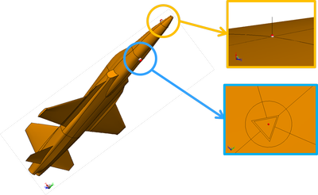
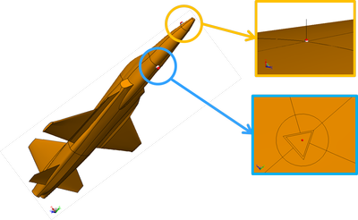

Antenna Design and Projects
What is the main function of an antenna?
An antenna (or aerial) is an electrical device which converts electric power into radio waves, and vice versa. It is usually used with a radio transmitter or radio receiver.
What is an antenna and how does it work?
Antennas like this are sometimes called receivers. A transmitter is a different kind of antenna that does the opposite job to a receiver: it turns electrical signals into radio waves so they can travel sometimes thousands of kilometers around the Earth or even into space and back.
Application of Microstrip Antenna
There are obviously tons of applications for antennas, way more than I can cover. I’ll show some of the more interesting ones I found in my research. The first is the United States Navy’s ELF system. ELF stands for Extremely Low Frequency. The Navy operates two antennas, one in Clam Lake, Wisconsin and the other in Republic, Michigan. The antennas work at 76 Hz, which if you used a half-wave dipole, the antenna would be over 1000 miles long. The ELF antennas are dipoles, but use about 80 miles of wire in the antenna. The reason for the low frequency is that the signal can penetrate seawater hundreds of feet to reach underwater submarines. Because the frequency is so low, the earth and the ionosphere behave like two conducting spherical shells. The signal travels around the world and reach submarines traveling at operational speeds. The one-way system is slow but reliable. The Navy submarines have ELF receivers which decode the message, but because of the large power requirements, subs cannot transmit ELF messages, so generally they will surface and use something faster like satellite communications.
Another application for antennas that I’m sure we’re all familiar with is VHF and UHF antennas, which stand for Very High Frequency and Ultra High Frequency. You’ve all seen the tall transmitting towers. They need to be large enough to achieve the desired frequency and provide a large range of coverage. VHF and UHF covers frequencies from 3 MHz to 3000 MHz and includes television and FM radio broadcasting. The most common type of receiving antenna is called a Yagi array antenna. The array has different size conductors to receive different frequencies. Yagi arrays are highly directional, so they should always be pointed towards the transmitter tower.
Antennas have lots of applications in wireless communications. Many different types of antennas can be used, and they all have their own advantages. Two common antennas are the quarter wave helical and quarter wave whip antennas. The whip, which is the same as a monopole, is the most common antenna for cellular phones, and is typically used in the 400 to 500 MHz range. The quarter wave helical antenna is smaller than the whip and has similar performance. Lately it is used in the 800 to 1000 MHz bands. Another antenna you’ve probably seen is the retractable antenna. What I found interesting in my research is that there are actually two totally separate antennas that are electrically decoupled. In the extended position, this particular antenna functions as a whip and in the retracted position it works as a helical antenna. The performance is slightly better in the extended position.
 
A patch antenna (also known as a rectangular microstrip antenna) is a type of radio antenna with a low profile, which can be mounted on a flat surface. It consists of a flat rectangular sheet or "patch" of metal, mounted over a larger sheet of metal called a ground plane.
Microstrip Patch Antenna
A patch antenna (also known as a rectangular microstrip antenna) is a type of radio antenna with a low profile, which can be mounted on a flat surface. It consists of a flat rectangular sheet or "patch" of metal, mounted over a larger sheet of metal called a ground plane.
Microstrip Slot Antenna
A slot antenna consists of a metal surface, usually a flat plate, with a hole or slot cut out. When the plate is driven as an antenna by a driving frequency, the slot radiates electromagnetic waves in a way similar to a dipole antenna.
Dielectric Resonator Antenna(DRA)
A dielectric resonator antenna (DRA) is a radio antenna mostly used at microwave frequencies and higher, that consists of a block of ceramic material of various shapes, the dielectric resonator, mounted on a metal surface, a ground plane. Radio waves are introduced into the inside of the resonator material from the transmitter circuit and bounce back and forth between the resonator walls, forming standing waves. The walls of the resonator are partially transparent to radio waves, allowing the radio power to radiate into space.
Wearable Antennas
Wearable Antennas are essentially any antenna that is specifically designed to function while being worn. Examples include smartwatches (which typically have integrated bluetooth antennas), glasses (such as Google Glass which has WIFI and GPS antennas), GoPro action cameras (which have wifi and bluetooth antennas, and are often strapped to a user to obtain their footage), and even the Nike+ Sensor (which communicates to a smartphone via bluetooth, and is placed in a user's shoe). Wearable antennas are becoming increasingly common in consumer electronics, and as such this page is dedicated to describing the unique difficulties involved in wearable antenna design.